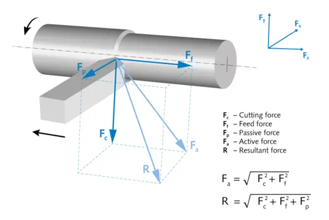
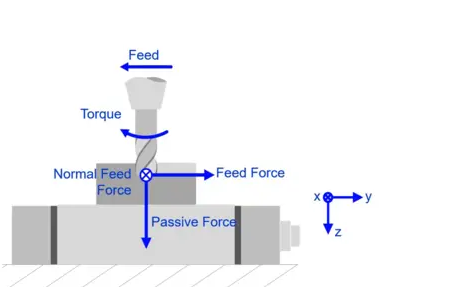

Análise de forças de usinagem
Sinais do dinamômetro (Fx, Fy, Fz). Os arquivos são processados neste navegador; nenhum dado de ensaio é enviado para servidor.
- Montagem
- Configuração
- Arquivos
- Faixas
- Resultados
1Montagem do dinamômetro
Dados técnicos do dinamômetro

| Fc | Cutting force | Força de corte |
|---|---|---|
| Ff | Feed force | Força de avanço |
| Fp | Passive force | Força passiva (radial) |
| Fa | Active force | Força ativa: Fa = √(Fc² + Ff²) |
| R | Resultant force | Força resultante: R = √(Fc² + Ff² + Fp²) |
As setas pretas indicam o giro da peça e o avanço da ferramenta. O triedro Fx, Fy, Fz no canto é ilustrativo: a correspondência com os canais do dinamômetro é a da lista ao lado (convenção DynoWare: Ff → Fx, Fp → Fy, Fc → Fz).
O dinamômetro estacionário fica entre a ferramenta e a torre, preso por um adaptador. Ele divide a força de usinagem em 3 componentes:
- Fc força de corte, na direção da velocidade de corte;
- Ff força de avanço, na direção do avanço;
- Fp força passiva, perpendicular às duas (radial).
Antes de cada ensaio, confira:
- Eixos do dinamômetro na convenção da figura.
- Amplificador de carga zerado (reset) com a ferramenta sem contato.
- Sensibilidade e faixa do amplificador iguais às do software de aquisição.
- Arquivo exportado com o tempo e as 3 forças, em N.
CUIDADO: fixe a ferramenta no dinamômetro com o torque de aperto do fabricante. Uma fixação solta altera as forças medidas.

| f | Feed | Avanço |
|---|---|---|
| Mz | Torque | Momento (torque) da ferramenta |
| Ff | Feed force | Força de avanço, na direção do avanço (eixo y) |
| FfN | Normal feed force | Força normal de avanço, perpendicular a Ff no plano de trabalho (eixo x) |
| Fp | Passive force | Força passiva, axial (eixo z) |
Fresamento de topo (face milling), visto de lado. ⊗ = força ou eixo para dentro do plano do desenho. Na furação e no rosqueamento, Fp é a força axial (de avanço).
Nestes processos, a peça fica presa sobre um dinamômetro estacionário, ou a ferramenta gira com um dinamômetro rotativo no fuso.
- Dinamômetro estacionário: mede Ff (avanço), FfN (normal ao avanço) e Fp (passiva, axial). A força ativa no plano de trabalho vem de Ff e FfN.
- Dinamômetro rotativo: mede o momento Mz, a força Fp e as forças Fx e Fy no plano de trabalho. A força de corte vem de Mz.
- Furação: Ff é axial; Fx e Fy são forças de deflexão. Com o momento: Fc = Mc / d (broca de 2 gumes, diâmetro d).
- Rosqueamento: a grandeza principal é o momento; a força axial mostra o sincronismo entre avanço e passo.
NOTA: este módulo lê o tempo e 3 forças. Associe as colunas do arquivo a Fx, Fy e Fz na etapa 2. O momento Mz não é lido nesta versão. A força de corte teórica vale só para torneamento.
Componentes conforme Kistler, Analyzing and optimizing cutting processes (catálogo 960-002e), traduzido. Figuras: © Kistler Group, reproduzidas do catálogo com indicação da fonte; termos traduzidos na tabela abaixo de cada figura.
2Configuração da análise
Parâmetros avançados
A taxa de amostragem vem da coluna de tempo de cada arquivo. Não há parâmetro.
3Arquivos do ensaio e pasta de resultados
Arquivos (.txt ou .csv)
Pasta de resultados
Cada rodada cria resultados_AAAAMMDD_hhmmss dentro desta pasta. O navegador lembra a pasta.
Este navegador não grava direto em pasta. Os resultados vão para um .zip, baixado no fim da rodada. Para gravar direto na pasta, use Chrome ou Edge no computador.